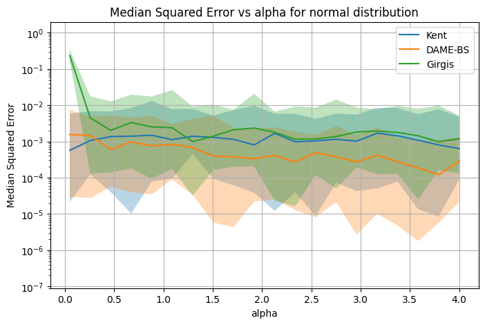
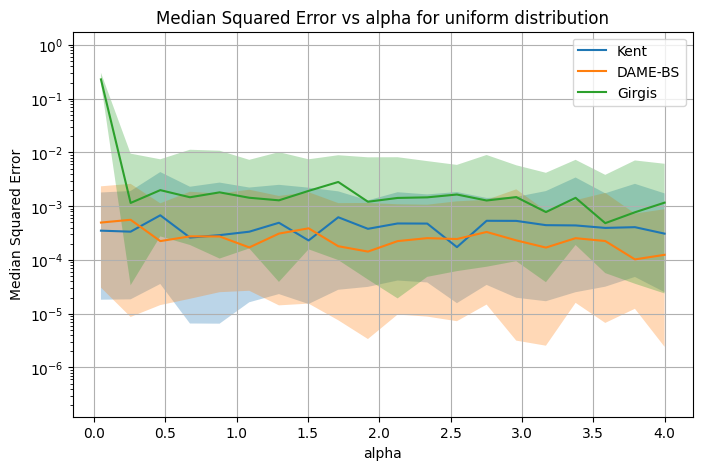
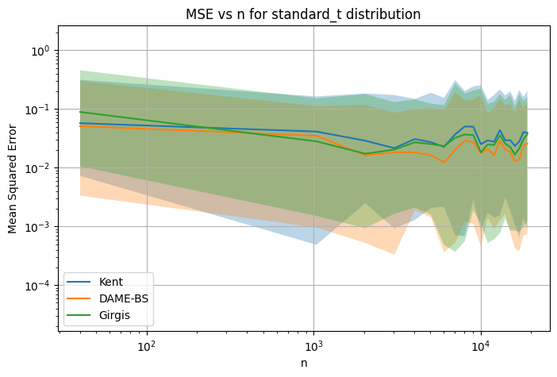
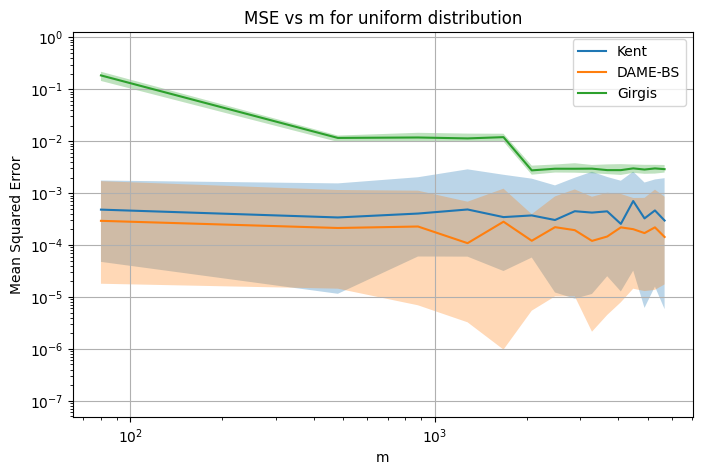
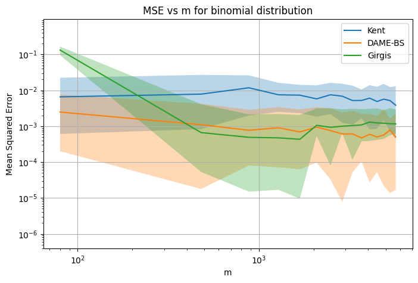
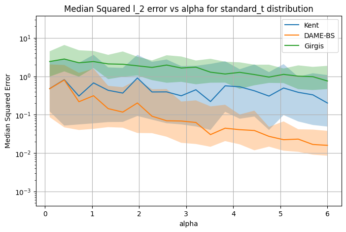
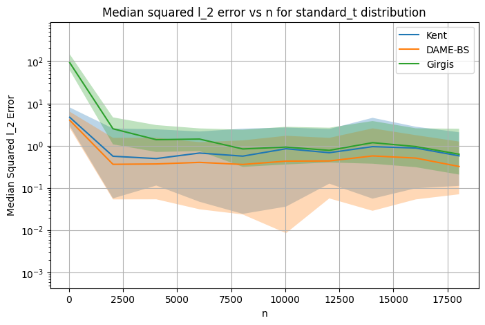
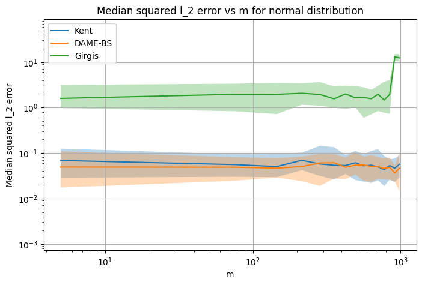
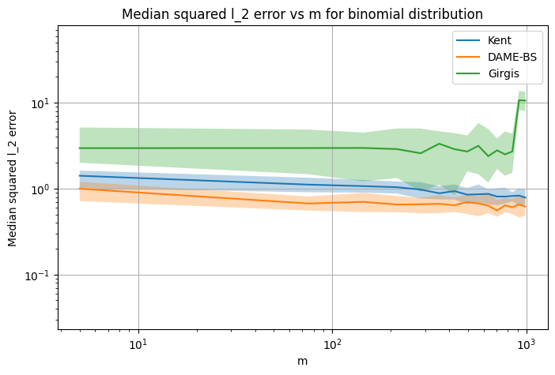
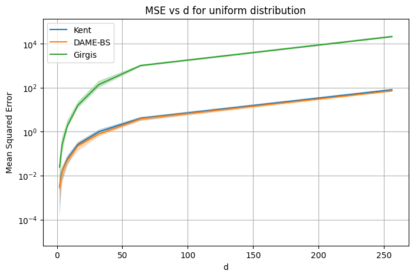

Experiments
This section presents experiments done to compare the DAME-BS algorithm, Kent’s algorithm and Girgis’ algorithm for both univariate and multivariate cases.
Univariate Experiments
- experiments.synthetic_data_experiments.univariate_experiment.generate_univariate_scaled_data(distribution, n, m, true_mean, seed=42)[source]
Generate and linearly scale univariate user samples into [-1,1]. This function simulates n users each providing m samples drawn from a specified one‑dimensional distribution centered (in expectation) at true_mean, and then rescales all samples (and the true mean) to lie in the interval [-1, 1].
- Parameters:
distribution (str) –
Which distribution to sample from. Supported values are:
”normal” : Gaussian N(true_mean, 1^2)
”uniform” : Uniform U(true_mean - 1, true_mean + 1)
- ”standard_t”Student’s t distribution with degrees of freedom = 3
and expected value shifted to true_mean
”binomial” : Binomial with number of trials as 50 and probability of success as true_mean/50
n (int) – Number of users (i.e., how many independent sample‐sets to generate).
m (int) – Number of i.i.d. samples per user.
true_mean (float) – The ground‐truth mean around which samples are generated; also used to compute the scaled “true_mean” output.
- Returns:
user_samples_scaled (ndarray of shape (n, m)) – The generated samples for all users, after rescaling linearly so the minimum across all samples maps to -1 and the maximum maps to +1.
true_mean_scaled (float) – The location of true_mean on the same linear map (i.e. the point in [-1,1] where the original true_mean falls).
- experiments.synthetic_data_experiments.univariate_experiment.plot_errorbars(x_values, median_errors_kent, median_errors_dame_bs, lower_errors_kent, lower_errors_dame_bs, upper_errors_kent, upper_errors_dame_bs, median_errors_girgis, lower_errors_girgis, upper_errors_girgis, xlabel, ylabel, title, log_scale=True, plot_ub=False, upper_bounds=None, save_path=None, log_log_scale=False, y_lim=True)[source]
Plots error bars for dame_bs and kent algorithms on a single graph.
This function is typically used to visualize the mean squared errors for different values (e.g., alpha or n or m).
- Parameters:
x_values (list or array-like) – X-axis values (e.g., alpha values or user counts).
mean_errors_kent (list or array-like) – Mean squared error values corresponding to alphas for kent algorithm.
mean_errors_dame_bs (list or array-like) – Mean squared error values corresponding to alphas for dame_bs algorithm.
std_errors_kent (list or array-like) – Standard deviation of the errors for each value in alphas for kent algorithm.
std_errors_dame_bs (list or array-like) – Standard deviation of the errors for each value in alphas for dame_bs algorithm.
xlabel (str) – Label for the x-axis.
ylabel (str) – Label for the y-axis.
title (str) – Title of the plot.
plot_ub (Bool) – If true then plots theoretical upper bounds for dame_bs algorithm. Default is ‘False’.
upper_bounds (list or array-like) – Theoretical upper bound values for dame_bs algorithm corresponding to alphas. Default is empty-list.
save_path (str) – If save_path is provided then saves the generated plot to provided path else displays plot. Default is None.
- Returns:
None. Displays the plot using matplotlib.pyplot or or saves the plot at the given path.
- experiments.synthetic_data_experiments.univariate_experiment.run_param(param_name, param_values, fixed_n, fixed_m, fixed_alpha, distribution, true_mean, trials_per_setting=50, base_seed=42, out_csv_path='results_param.csv', n_jobs=8)[source]
Run multiple experimental trials varying one parameter.
For each value in param_values, this function runs trials_per_setting independent trials in parallel (using a process pool), evaluates both DAME-BS and Kent estimators, and writes results to CSV. Summary statistics (median, quantile error rates and computation time) are also returned.
- Parameters:
param_name ({"alpha", "n", "m"}) – Which parameter to vary across the experiment among privacy parameter (alpha), number of users (n) or number of samples per users (m)
param_values (list) – List of values for the chosen parameter.
fixed_n (int) – Fixed number of users (used when param_name is not “n”).
fixed_m (int) – Fixed number of samples per user (used when param_name is not “m”).
fixed_alpha (float) – Fixed privacy/confidence parameter (used when param_name is not “alpha”).
distribution (str) – Distribution type for synthetic data (“uniform”,”normal”,”binomial”,”standard_t”)
true_mean (float) – Ground-truth mean of the generating distribution.
trials_per_setting (int, optional (default=50)) – Number of independent trials per parameter value.
base_seed (int, optional (default=42)) – Base seed for reproducibility. It is combined with indices to generate per-trial seeds.
out_csv_path (str, optional (default="results_param.csv")) – Path to write per-trial results in CSV format.
n_jobs (int, optional (default=8)) – Number of parallel worker processes.
- Returns:
results – A dictionary with keys: - “param_values” : list of parameter values - “median_dame”, “lower10_dame”, “upper90_dame” - “median_kent”, “lower10_kent”, “upper90_kent” - “median_girgis”,”lower10_girgis”,”upper90_girgis” - “df” : pandas DataFrame containing all per-trial rows
- Return type:
dict
- experiments.synthetic_data_experiments.univariate_experiment.single_trial(n, m, alpha, distribution, true_mean, trial_seed)[source]
Run one complete experimental trial.
This function generates a fresh dataset with the given random seed, runs both the DAME-BS and Kent estimators on it, and records their performance metrics (MSE and runtime). The output is formatted as a dictionary suitable for logging to CSV.
- Parameters:
n (int) – Number of users.
m (int) – Number of samples per user.
alpha (float) – Privacy parameter passed to both estimators.
distribution (str) – Distribution type to generate synthetic data from (supported values : “normal”,”uniform”,”binomial”,”standard_t”).
true_mean (float) – Ground-truth mean of the distribution (before scaling).
trial_seed (int) – Random seed controlling reproducibility of this trial.
- Returns:
row – Dictionary containing per-trial information with keys: - “n”, “m”, “alpha”, “distribution”, “true_mean”, “seed” - “dame_estimate”, “dame_mse”, “dame_time”, - “kent_estimate”, “kent_mse”, “kent_time”, - “girgis_estimate”,”girgis_mse”,”girgis_time”, - “status” : “ok” or error string
- Return type:
dict
Multivariate Experiments
- experiments.synthetic_data_experiments.multivariate_experiment.generate_multivariate_scaled_data(distribution, n, m, d, true_mean, seed=42)[source]
Generates and scales multivariate samples into [-1,1]^d.
- Parameters:
distribution (str) – Supported Distributions {“normal”,”uniform”,”standard_t”,”binomial”}.
n (int) – Number of users (i.e. number of independent sample‐sets).
m (int) – Number of samples per user.
d (int) – Dimension of each dimension.
true_mean (array‐like of shape (d,)) – The ground‐truth mean vector.
- Returns:
user_samples_scaled (ndarray, shape (n, m, d)) – All user samples, scaled so each coordinate lies in [-1,1].
true_mean_scaled (ndarray, shape (d,)) – The true_mean vector under the same per‐coordinate scaling.
- experiments.synthetic_data_experiments.multivariate_experiment.run_param_multivariate(param_name, param_values, fixed_n, fixed_m, fixed_alpha, fixed_d, distribution, true_mean, trials_per_setting=50, base_seed=42, out_csv_path='results_param.csv', n_jobs=8)[source]
Parallel experiment runner for multivariate trials.
Varies one parameter (alpha, n, m, or d) across a grid of values, runs multiple independent trials in parallel, evaluates both estimators (DAME-BS and Kent), writes results incrementally to CSV, and summarizes error statistics.
- Parameters:
param_name ({"alpha", "n", "m", "d"}) – Which parameter to vary across the experiment.
param_values (list) – Sequence of values for the chosen parameter.
fixed_n (int) – Fixed number of users (used when param_name is not “n”).
fixed_m (int) – Fixed number of samples per user (used when param_name is not “m”).
fixed_alpha (float) – Fixed privacy/confidence parameter (used when param_name is not “alpha”).
fixed_d (int) – Fixed data dimensionality (used when param_name is not “d”).
distribution (str) – Distribution type used to generate synthetic multivariate data.
true_mean (array-like) – Ground-truth mean vector of the generating distribution. If param_name == “d”, this is reset automatically to [0.1] * d.
trials_per_setting (int, optional (default=50)) – Number of independent trials per parameter value.
base_seed (int, optional (default=42)) – Base seed for reproducibility; combined with indices to generate per-trial seeds.
out_csv_path (str, optional (default="results_param.csv")) – Path to write per-trial results in CSV format (overwritten if exists).
n_jobs (int, optional (default=8)) – Number of worker processes to use.
- Returns:
results – Dictionary with keys: - “param_values” : list of parameter values (in original order) - “median_dame”, “lower10_dame”, “upper90_dame” - “median_kent”, “lower10_kent”, “upper90_kent” - “df” : pandas DataFrame with all per-trial rows
- Return type:
dict
- experiments.synthetic_data_experiments.multivariate_experiment.single_trial(n, m, alpha, d, distribution, true_mean, trial_seed)[source]
Run one complete multivariate experimental trial.
This function generates synthetic multivariate data, runs both the DAME-BS and Kent estimators, and collects their performance metrics (mean squared error and runtime). Results are returned in a dict that can be written directly to CSV.
- Parameters:
n (int) – Number of users.
m (int) – Number of samples per user.
alpha (float) – Privacy parameter for the estimators.
d (int) – Dimension of the multivariate distribution.
distribution (str) – Distribution type used for synthetic data generation (supported values : “normal”,”uniform”,”binomial”,”standard_t”).
true_mean (array-like of shape (d,)) – Ground-truth mean vector of the generating distribution (before scaling).
trial_seed (int) – Random seed controlling reproducibility of this trial.
- Returns:
row – Dictionary with per-trial results containing keys: - “n”, “m”, “alpha”, “d”, “distribution”, “true_mean”, “seed” - “dame_estimate”, “dame_mse”, “dame_time” - “kent_estimate”, “kent_mse”, “kent_time” - “girgis_estimate”, “girgis_mse”, “girgis_time” - “status” : “ok” or error string
- Return type:
dict
Real Data : MIMIC-III
- experiments.real_data_experiments.mimic.preprocess.append_row_csv(path, row: dict)[source]
Append a single row of results to an existing CSV file.
This function ensures the parent directory exists and then appends a new row (provided as a dictionary) to the CSV file. If the file does not already exist, it is the caller’s responsibility to initialize it with init_results_csv.
- Parameters:
path (str) – File path to the CSV file.
row (dict) – A dictionary where keys correspond to column names and values correspond to row entries.
- Returns:
This function writes the new row to the CSV file.
- Return type:
None
- experiments.real_data_experiments.mimic.preprocess.init_results_csv(path)[source]
Initialize (create or overwrite) a results CSV file with predefined column headers.
This function ensures the parent directory exists, then creates a CSV file with the expected schema for storing per-trial results.
- Parameters:
path (str) – File path where the CSV will be created.
- Returns:
This function writes the CSV file to disk.
- Return type:
None
- experiments.real_data_experiments.mimic.preprocess.make_file(path)[source]
Ensure that the directory for a given file path exists.
This function extracts the directory portion of the given file path and checks if it exists. If it does not exist, it creates the directory (including any intermediate directories as needed).
- Parameters:
path (str) – A path-like object representing a file system path.
- Returns:
This function does not return anything. It ensures the parent directory exists.
- Return type:
None
- experiments.real_data_experiments.mimic.preprocess.make_seed(base_seed, trial_index)[source]
Generate a deterministic 32-bit integer seed from a base seed and a trial index.
The function concatenates the base_seed and trial_index, hashes the string using MD5, and returns the first 32 bits (8 hex characters) of the hash as an integer.
- Parameters:
base_seed (int) – The base seed value used for reproducibility.
trial_index (int) – The trial index used to generate unique seeds across trials.
- Returns:
A deterministic 32-bit integer seed.
- Return type:
int
- experiments.real_data_experiments.mimic.preprocess.scaling_data(user_samples)[source]
Scales user data into the range [-1, 1] and computes relevant statistics.
This function flattens all user data into a single list, finds the global minimum and maximum values, and then linearly scales all values for each user into the range [-1, 1] using the transformation:
scaled_value = (2 * (value - vmin) / (vmax - vmin)) - 1
- Parameters:
user_samples (dict) – A dictionary mapping users (keys) to lists of numeric samples (values),
- Returns:
user_samples_scaled (dict) – Dictionary with the same keys as user_samples, where each user’s values are scaled to the range [-1, 1].
desired_length (int) – The minimum number of samples across all users.
true_mean (float) – The mean of all unscaled sample values.
true_mean_scaled (float) – The mean of all scaled sample values.
vmin (float) – Minimum value among all unscaled sample values.
vmax (float) – Maximum value among all unscaled sample values.
- experiments.real_data_experiments.mimic.preprocess.truncate_and_shuffle(user_samples, desired_length)[source]
Truncates each user’s sample list to a fixed length and shuffles it randomly.
- Parameters:
user_samples (dict) – Dictionary mapping users to lists of samples.
desired_length (int) – The number of samples to retain per user.
- Returns:
final – Dictionary containing users with desired_length samples, where each user’s samples are truncated and shuffled.
- Return type:
dict
- experiments.real_data_experiments.mimic.run_mimic_experiment.main()[source]
This script runs a 500-trial comparison of Kent’s mean estimator, algorithm proposed by Girgis and DAME-BS on real heart rate data from the MIMIC-III dataset.
- Steps:
Loads and filters MIMIC-III CHARTEVENTS for heart rate data.
Scales all values to [-1, 1] and truncates samples so each user have same number of samples.
Runs all three algorithms across 500 trials.
Reports runtime, mean estimates, and median MSE (in both scaled and original ranges) including 10th and 90th percentile.
Saves each trial along with other parameter in a csv file.
Also saves the final summary of results.
Real Data : Stock Prices
Real Data : GLOBEM
- experiments.real_data_experiments.globem.preprocess.append_row_csv(path, row: dict)[source]
Append a single row of results to an existing CSV file.
This function ensures the parent directory exists and then appends a new row (provided as a dictionary) to the CSV file. If the file does not already exist, it is the caller’s responsibility to initialize it with init_results_csv.
- Parameters:
path (str) – File path to the CSV file.
row (dict) – A dictionary where keys correspond to column names and values correspond to row entries.
- Returns:
This function writes the new row to the CSV file.
- Return type:
None
- experiments.real_data_experiments.globem.preprocess.init_results_csv(path)[source]
Initialize (create or overwrite) a results CSV file with predefined column headers.
This function ensures the parent directory exists, then creates a CSV file with the expected schema for storing per-trial results.
- Parameters:
path (str) – File path where the CSV will be created.
- Returns:
This function writes the CSV file to disk.
- Return type:
None
- experiments.real_data_experiments.globem.preprocess.load_and_select_sleep(path)[source]
Load and preprocess sleep duration data from a CSV file. This function reads Fitbit sleep data and selects only the participant ID (pid), date, and total duration of sleep (main sleep) for the day.
- Parameters:
path (str) – Path to the CSV file containing the sleep data.
- Returns:
A DataFrame with columns: ‘pid’, ‘date’, and ‘sleep_duration’.
- Return type:
pandas.DataFrame
- experiments.real_data_experiments.globem.preprocess.load_and_select_steps(path)[source]
Load and preprocess step count data from a CSV file containing steps data of users. This function reads the Fitbit intraday step data and selects only relevant columns: participant ID (pid), date, and the sum of steps for each time segment of the day (morning, afternoon, evening, night). It then renames those columns for readability.
- Parameters:
path (str) – Path to the CSV file containing the step data.
- Returns:
A DataFrame with columns: ‘pid’, ‘date’, ‘steps_morning’, ‘steps_afternoon’, ‘steps_evening’, and ‘steps_night’.
- Return type:
pandas.DataFrame
- experiments.real_data_experiments.globem.preprocess.make_file(path)[source]
Ensure that the directory for a given file path exists.
This function extracts the directory portion of the given file path and checks if it exists. If it does not exist, it creates the directory (including any intermediate directories as needed).
- Parameters:
path (str) – A path-like object representing a file system path.
- Returns:
This function does not return anything. It ensures the parent directory exists.
- Return type:
None
- experiments.real_data_experiments.globem.preprocess.make_seed(base_seed, trial_index)[source]
Generate a deterministic 32-bit integer seed from a base seed and a trial index.
The function concatenates the base_seed and trial_index, hashes the string using MD5, and returns the first 32 bits (8 hex characters) of the hash as an integer.
- Parameters:
base_seed (int) – The base seed value used for reproducibility.
trial_index (int) – The trial index used to generate unique seeds across trials.
- Returns:
A deterministic 32-bit integer seed.
- Return type:
int
- experiments.real_data_experiments.globem.preprocess.scaling(data)[source]
Scales user sample data to the range [-1, 1] and computes the mean before and after scaling.
- Parameters:
data (dict) – Dictionary where keys are user IDs and values are lists of numeric samples.
- Returns:
- user_samples_scaled (list of list) – Scaled user samples.
- min_val (float) – Minimum value before scaling.
- max_val (float) – Maximum value before scaling.
- true_mean (float) – True mean before scaling.
- true_mean_scaled (float) – True mean after scaling.
- experiments.real_data_experiments.globem.preprocess.truncating_data(data)[source]
Truncates each user’s data to the same number of samples (minimum length among all users), after shuffling their individual sample lists.
- Parameters:
data (dict) – Dictionary where keys are user IDs and values are lists of numeric samples.
- Returns:
- dict (Truncated dictionary of user samples with uniform length.)
- int (Number of samples per user after truncation.)
- experiments.real_data_experiments.globem.run_sleep_experiment.main()[source]
Main experiment function for evaluating Kent’s algorithm, Girgis’ algorithm and DAME-BS on GLOBEM sleep duration data.
Steps:
Loads and concatenates multiple CSV files containing Fitbit-derived sleep duration.
Handles missing data and prepares a uniform sample length across users.
Scales the sleep duration values to the range [-1, 1].
Runs all three algorithms 500 times to estimate the mean and records time and accuracy.
Reports runtime, mean estimates, and median MSE (in both scaled and original ranges) including 10th and 90th percentile.
Saves each trial along with other parameter in a csv file.
Also saves the final summary of results.
- experiments.real_data_experiments.globem.run_steps_experiment.main()[source]
Executes the mean estimation experiment on segmented step count data.
Steps:
Load 4 CSV files containing Fitbit-derived step counts over different time segments of the day.
Preprocess the data: merge, remove NaNs, flatten per-user data, and truncate to uniform length.
Scale data to the [-1, 1] range and compute true means.
Shuffle users and run both estimation algorithms (Kent’s and DAME-BS) 500 times.
Runs all three algorithms 500 times to estimate the mean and records time and accuracy.
Reports runtime, mean estimates, and median MSE (in both scaled and original ranges) including 10th and 90th percentile.
Saves each trial along with other parameter in a csv file.
Also saves the final summary of results.
Results
This section presents a comparison between the dame_bs algorithm and Kent’s algorithm in both the univariate and multivariate case. We generated datasets from three distributions— Normal, Uniform, and Binomial—with a mean of 0.1. All data points and the true mean were then scaled to the range [-1, 1]. The comparison was based on the mean squared error between the estimated mean and the scaled true mean across 200 trials.
Univariate case
Mean Squared Error vs privacy parameter alpha for the different distributions.
|  |  |

|

|
Mean Squared Error vs n (total number of users) for the different distributions.

|

|
|  |
Mean Squared Error vs m (number of samples per user) for the different distributions.

|
 |
|  | 
|
Multivariate case
Mean Squared Error vs privacy parameter alpha for the different distributions.

|

|

|
 |
Mean Squared Error vs n (total number of users) for the different distributions.

|
|
|  |
Mean Squared Error vs m (number of samples per user) for the different distributions.
|  | 
|
|  | 
|
Mean Squared Error vs d (dimensionality of each sample) for the different distributions.
|  | |

|
Real World Data
Stock Prices
We conducted experiments using a mean estimation algorithm to estimate the average price of stock data. In our setup, each stock was considered as a separate user, and its price history served as the sample data. For each stock, we used 249 data points and compared the performance of Kent’s algorithm and Girgis’ algorithm with DAME-BS. The results below show the computation time and median squared errors, both for scaled prices within the range [-1, 1] and for the actual price scale.

MIMIC-III (‘Medical Information Mart for Intensive Care’)
We conducted this experiment using MIMIC-III Dataset which consists of comprehensive clinical data of critical care admissions from 2001-2012 (Dataset : https://www.kaggle.com/datasets/asjad99/mimiciii). We used heart rate of patients over time. We could only find data for 48 patients with 11 samples per user. We conducted mean estimation using DAME-BS, Kent’s and Girgis’ algorithm 500 times and report median squared error. (for both scaled and unscaled values) and average time taken by both algorithms. The results were limited in quality due to the small nummber of users and low number of samples per user.
GLOBEM Dataset
We conducted this experiment using GLOBEM Dataset which consists of data from a mobile phone and a wearable fitness tracker 24×7, including Location, PhoneUsage, Call, Bluetooth, PhysicalActivity, and Sleep behavior. The datasets capture various aspects of participants’ life experiences, such as general behavior patterns, the weekly routine cycle, the impact of COVID (Year3, 2020), and the gradual recovery after COVID (Year4, 2021) (Dataset : https://github.com/UW-EXP/GLOBEM/tree/main/data_raw). We used steps from four segments of the day and total sleep duration per day for each user. For both cases, we conducted mean estimation using DAME-BS, Kent’s and Girgis algorithm 500 times and report median squared error (for both scaled and unscaled values) and average time taken by both algorithms. The results were limited in quality due to the small nummber of users and low number of samples per user.
For steps data, we had a total of 40 user with 88 samples per user. Here are the results -

{kind=link}
{kind=link}
{kind=link}
{kind=link}
{kind=link}
{kind=link}
{kind=link}
{kind=link}
{kind=link}
{kind=link}
{kind=link}
{kind=link}
{kind=link}
{kind=link}
{kind=link}
{kind=link}
{kind=link}